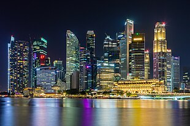

Economy of Singapore
|  Skyline of Singapore's Downtown Core | |
| Currency | Singapore dollar (SGD/S$) |
|---|---|
| 1 April – 31 March | |
Trade organisations | WTO, APEC, CPTPP, IOR-ARC, RCEP, ASEAN and others |
Country group | |
| Statistics | |
| Population | |
| GDP | |
| GDP rank | |
GDP growth | |
GDP per capita | |
GDP per capita rank | |
GDP by sector |
|
| 5.5% (Jan 2023)[7] | |
Population below poverty line | N/A |
| |
Labour force | |
Labour force by occupation |
|
| Unemployment |
|
Main industries |
|
| External | |
| Exports | |
Export goods |
|
Main export partners | |
| Imports | |
Import goods | |
Main import partners |
|
FDI stock | |
Gross external debt | |
| S$738.811 billion (Q1 2015)[15] | |
| Public finances | |
| 167.8% of GDP (2022 est.)[c][6] | |
| Revenues | S$69.45 billion (2017 est.)[16] |
| Expenses | S$75.07 billion (2017 est.)[16] |
| Economic aid | N/A |
All values, unless otherwise stated, are in US dollars. | |
{kind=link}
The economy of Singapore is a highly developed mixed market economy with dirigiste characteristics.[20][21][22][23] Singapore's economy has been consistently ranked as the most open in the world,[24] the joint 4th-least corrupt,[25] and the most pro-business.[26] Singapore has low tax-rates[27] and the second highest per-capita GDP in the world in terms of purchasing power parity (PPP). The Asia-Pacific Economic Cooperation (APEC) is headquartered in Singapore.
Alongside the business-friendly reputation for global and local privately held companies and public companies, various national state-owned enterprises play a substantial role in Singapore's economy. The sovereign wealth fund Temasek Holdings holds majority stakes in several of the nation's largest bellwether companies, such as Singapore Airlines, Singtel, ST Engineering and Mediacorp. With regards to foreign direct investment (FDI), the Singaporean economy is a major FDI outflow-financier in the world. In addition, throughout its history, Singapore has benefited from the large inward flows of FDI from global investors, financial institutions and multinational corporations (MNCs) due to its highly attractive investment climate along with a stable and conducive political environment throughout its modern years.[28]
Overview
[edit]Singapore relies on an extended concept of intermediary trade to entrepôt trade,[29][30] by purchasing raw goods and refining them for re-export in order to sustain its high levels of export-oriented industrialization, such as in the wafer-fabrication industry and in oil refining. Singapore has a strategic port which makes it more competitive than many of its neighbours in carrying out such entrepôt activities. Singapore's trade-to-GDP ratio is among the highest in the world, as of 2020 the ratio was 320%.[31][32] The Port of Singapore is the second-busiest in the world by cargo tonnage and is the busiest transshipment port in the world.[33]
Singapore is also a regional, continental and global hub for the management and operations of various MNCs, because of its strategic location in close proximity with other Asia-Pacific markets, along with its advanced connectivity and infrastructure (airline hub and maritime port with a diverse array of destinations, Gigabit fiber-optic communications, efficient road transport and public transport) and its immigration policies in welcoming global talent. In addition, Singapore is a popular international tourist destination for various types of tourism (Business tourism, MICE (Meetings, Incentives, Conferences, Exhibitions) tourism, Medical tourism, Urban tourism).
Singapore's economy is often referred to as a "miracle" due to its rapid transformation from a developing country to a developed, high-income economy in a relatively short period of time. This transformation took place in the second half of the 20th century under the leadership of Prime Minister Lee Kuan Yew and his government.[34] One of the key factors contributing to Singapore's economic miracle was its strategic location, which made it an ideal hub for international trade and commerce.[35]
The country's main exports include electronics, chemicals and services. Singapore is the regional hub for wealth management.[36][37][38] Water is scarce in Singapore and a sizeable percentage of water is imported from Malaysia,[39] therefore it is defined as a precious resource.
Small and medium-sized enterprises (SMEs) are the backbone of Singapore's economic landscape. In 2022 SMEs contributed 48% (S$284 bil) of Singapore's total enterprise nominal value-added and employed 71% of Singapore's total workforce of 3.63 million.[40]
Singapore has limited arable land, meaning that Singapore is heavily reliant on agrotechnology parks (particularly vertical hydroponic farms) for agricultural production.[41][42] As a result, Singapore imports 90% of its food supply and has a wide variety of supplier countries in order to achieve its food security; Singapore is ranked as among the most food secure in the world.[43][44]
Apart from its strategic location at the cross-roads of trade between the East and the West, Singapore has little to no natural resources, hence human resources is a pivotal issue for the health of the Singaporean economy; the services and manufacturing sectors of the economy are heavily reliant on a highly-educated and highly-skilled 'Professional, Managerial, Executive and Technical' (PMET) workforce composed of residents and expatriates.[45][46][47] The economy of Singapore ranked 2nd overall in the Scientific American Biotechnology ranking in 2014,[48] with the featuring of Biopolis.
To preserve its international standing and to further its economic prosperity in the 21st century, Singapore has taken measures to promote innovation, to encourage entrepreneurship and to retrain its workforce.[49] The Ministry of Manpower (MoM) has the prime responsibility for setting, adjusting, and enforcing immigration rules for foreign workers, in order to achieve the dual mandate of maximum employment of the local resident population and maximum economic growth for the nation. Approximately 29% of the total population within Singapore are non-resident foreigners, including 255,800 foreign domestic workers (FDWs) who operate in Singapore.[50]
Economic statistics
[edit]The following table shows the main economic indicators in 1980–2021 (with IMF staff estimates in 2022–2027). Inflation below 5% is in green.[51]
| Year | GDP
(in Bil. US$PPP) |
GDP per capita
(in US$ PPP) |
GDP
(in Bil. US$nominal) |
GDP per capita
(in US$ nominal) |
GDP growth
(real) |
Inflation rate
(in Percent) |
Unemployment
(in Percent) |
Government debt
(in % of GDP) |
|---|---|---|---|---|---|---|---|---|
| 1980 | 22.9 | 9,479.4 | 12.1 | 5,005.0 | 5.8% | n/a | ||
| 1981 | n/a | |||||||
| 1982 | n/a | |||||||
| 1983 | n/a | |||||||
| 1984 | n/a | |||||||
| 1985 | n/a | |||||||
| 1986 | n/a | |||||||
| 1987 | n/a | |||||||
| 1988 | n/a | |||||||
| 1989 | n/a | |||||||
| 1990 | 73.5% | |||||||
| 1991 | ||||||||
| 1992 | ||||||||
| 1993 | ||||||||
| 1994 | ||||||||
| 1995 | ||||||||
| 1996 | ||||||||
| 1997 | ||||||||
| 1998 | ||||||||
| 1999 | ||||||||
| 2000 | ||||||||
| 2001 | ||||||||
| 2002 | ||||||||
| 2003 | ||||||||
| 2004 | ||||||||
| 2005 | ||||||||
| 2006 | ||||||||
| 2007 | ||||||||
| 2008 | ||||||||
| 2009 | ||||||||
| 2010 | ||||||||
| 2011 | ||||||||
| 2012 | ||||||||
| 2013 | ||||||||
| 2014 | ||||||||
| 2015 | ||||||||
| 2016 | ||||||||
| 2017 | ||||||||
| 2018 | ||||||||
| 2019 | ||||||||
| 2020 | ||||||||
| 2021 | ||||||||
| 2022 | ||||||||
| 2023 | ||||||||
| 2024 | ||||||||
| 2025 | ||||||||
| 2026 | ||||||||
| 2027 |
History
[edit]{kind=link}
British colonization
[edit]In 1819, Stamford Raffles, at the time Lieutenant-Governor of Bencoolen, established a trading post in Singapore.[52] Raffles had been searching for a new settlement that could be used as an outpost of the British Empire. He left Calcutta and set out to explore much of South-East Asia. At the time, the Dutch Empire and British Empire were close economic rivals. Colonization enabled these empires to gain control of the vast resources of militarily weaker and economically less prosperous nations. Raffles was looking for a new settlement that could replace Malacca as a key economic advantage over the Dutch Empire. The former had been handed over to the Dutch under the Treaty of Vienna of 1815.[53] Raffles found Singapore to be a perfect location, sitting just of the edge of the Straits of Malacca, nowadays one of the most important shipping lanes in the world. As well, the territory had key economic resources which would benefit the British. There was abundant timber and fresh water, and a natural deep water harbor which would be beneficial for the British fleet. He arrived on an island at the mouth of the Singapore River, where there was a small Malay settlement. At the time accompanied by William Farquhar, Raffles met with Temenggong (essentially, Chief of Security, for the settlement) Abdul Rahman to negotiate the right to establish a trading post on the island, under the British Empire. The island was ruled nominally from Johar on the peninsula by Tengku (essentially, Prince) Rahman, Sultan of Johor, who was heavily influenced by the Dutch and the Bugis. However, the Sultanate was weakened by factional division so that Temenggong Abdul Rahman and his officials were more loyal to Rahman's elder brother Tengku Hussein (or Tengku Long) who was living in exile in “Riau” (likely the Riau Archipelago). With the Temenggong's help, Raffles managed to smuggle Hussein back to Singapore. He offered to recognize Hussein as the rightful Sultan of Johor and provide him with a yearly stipend; in return, Hussein would grant the British the right to establish a trading post on Singapore.[citation needed] On 6 February 1819 Raffles succeeded in having the territory formally incorporated into the British Empire as the aforementioned trading post.[citation needed] Much of the settlement’s rapid economic growth thereafter can be credited to its natural suitability as a seaport hub.[54]
Trade expansion
[edit]On 17 November 1869, the Suez Canal opens, connecting the Mediterranean Sea to the Red Sea. This allowed for a decrease in travel time, which resulted in a rise in trade volume. The nation saw a $32 million rise just a year after its opening.[55]
Trade volume reached $105 million Straits dollars in 1879,[56] during which entrepot trade was the main source of income and trade alone accounted for more than one-third of GDP.[citation needed]
Independence
[edit]In the 1950s, the region saw social unrest which resulted in colonial powers deciding to relinquish some decision making. With spurs of race riots the colonial powers sought to empower and establish a formidable local government. With most of the unrest resulting from high unemployment, the local government was directed to solve this issue.[52] The Economic Development Board was formed to empower the Singapore government in establishing, developing, and financing industrial undertakings.[57]
In 1955, a Singapore local legislative Assembly with 25 out of 35 members elected was formed.[58]
Upon independence from Malaysia in 1965, Singapore faced a small domestic market, and high levels of unemployment and poverty. 70 percent of Singapore's households lived in badly overcrowded conditions, and a third of its people squatted in slums on the city fringes. Unemployment averaged 14 percent, GDP per capita was US$516, and half of the population was illiterate[citation needed].
Industrialisation boom and change
[edit]After Lee Kuan Yew was elected, he oversaw significant economic reforms to the country. Structural change and machinery propelled the economy during his tenure. Singapore was a small and densely populated nation, with very few natural resources and little space to grow outwards. Recognizing this, Lee identified that the key advantage that Singapore held was its human capital, and its ability to provide highly educated citizens capable of competing in global industry and trade. On 1 August 1961, the Singapore Government established the Economic Development Board to spearhead an investment drive, and make Singapore an attractive destination for foreign investment.[59] FDI inflows increased greatly over the following decades, and by 2001 foreign companies accounted for 75% of manufactured output and 85% of manufactured exports. Meanwhile, Singapore's savings and investment rates rose among the highest levels in the world, while household consumption and wage shares of GDP fell among the lowest.[60][61][62] The beginning of Lee's tenure was marked with success and from 1965–1973, annual growth of real GDP was 12.7%.[63] He directed spending to repair and improve infrastructure. This effort spurred economic productivity and put in place the foundations needed to build up basic industry. As of 2019, Singapore's infrastructure is ranked the best in terms of quality, with a score of 95.4 out of 100.[64] The period from 1973-1979 marked a struggle for Singapore as they pivoted away from basic infrastructure spending and moved towards more sustainable economic progress. The 1973 oil crisis raised government awareness of issues such as economic concentration. It forced the government to hold new forum to discuss ways of adapting the countries economy to economic change. GDP growth during this time was slightly lower than the preceding years, at 8.5% annually. However, unemployment was virtually 0%, and most of the population had experienced great strides in productivity.[65] The government highlighted a focus in technology and education to be the new wave of economic gain.[66] In addition, they identified financial services as a key area in which Singapore could diversify and attract new growth. During this time, the government invested heavily in its budding financial services industry. It managed to minimize inflation and provide workers with the proper equipment and machinery to sustain growth.
Recent history
[edit]Growth in the service sector
[edit]As a result of this investment drive, Singapore's capital stock increased 33 times by 1992, and achieved a tenfold increase in the capital-labour ratio.[67] Living standards steadily rose, with more families moving from a lower-income status to middle-income security with increased household incomes.
In 1987, Lee claimed that (based on the government's home ownership criterion) 80% of Singaporeans could now be considered to be members of the middle-class. Under Lee, Singapore had both low inflation and unemployment. However, much unlike the economic policies of Greece and the rest of Europe, Singapore followed a policy of individualising the social safety net. This led to a higher than average savings rate and a very sustainable economy in the long run. Without a burdensome welfare state or its likeliness, Singapore has developed a very self-reliant and skilled workforce well versed for a global economy.[68]
The 1990s posed a great question for Singapore, as to how they would reinvent their economy. The 1990s emergence of efficient manufacturing firms in southeast Asia challenged the nation with such a small labor force and land restrictions. Friedrich noted how " it would be "unlikely to expand beyond the current 25% share of the economy," when regarding manufacturing firms.[69] Despite struggling in the manufacturing sector Singapore thrived in global finance, trading, and was an industrial hub for international trade.[70]
Singapore's economic strategy produced real growth averaging 8.0% from 1960 to 1999. Since the nation's independence in 1965, Singapore's GDP has amassed an average of a 9.5% increase.[71] The economy picked up in 1999 under Goh Chok Tong, the Prime Minister of Singapore, after the regional financial crisis, with a growth rate of 5.4%, followed by 9.9% for 2000. However, the economic slowdown in the United States, Japan and the European Union, as well as the worldwide electronics slump, had reduced the estimated economic growth in 2001 to a negative 2.0%.
The economy expanded by 2.2% the following year, and by 1.1% in 2003 when Singapore was affected by the SARS outbreak. Subsequently, a major turnaround occurred in 2004 allowed it to make a significant recovery of 8.3% growth in Singapore, although the actual growth fell short of the target growth for the year more than half with only 2.5%. In 2005, economic growth was 6.4%; and in 2006, 7.9%.
It was apparent that Singapore would also struggle as a result of the global financial crisis given its status as a financial services hub. Some market commentators doubted the economy's ability to cope with the effects of the crisis. In the end the economy grew in 2009 by 3.1% and in 2010, the nation saw a 15.2% growth rate.[71][72]
As of 8 June 2013, Singapore's unemployment rate is around 1.9% and the country's economy has a lowered growth rate, with a rate of 1.8% on a quarter-by-quarter basis—compared to 14.8% in 2010.
2015 and 2016 saw a downturn for the nation as GDP growth shrunk to just 2 percent. Despite growth diminishing, the nation has yet to post negative growth rates which are a positive sign. During the same period of diminishing economic growth. Unemployment and inflation have also decreased.[71]
As of 2017 Singapore's GDP reached $323.907 billion.[73]
Singapore is expected to experience an economic slowdown in 2019, with GDP growth slowing to 1.9% from 3.1% in 2018, due to tariff hikes from the United States and China.[74]
During the initial months of the COVID-19 pandemic, on 26 March 2020, Singapore's Ministry of Trade and Industry said it believed that the economy would contract by between 1% and 4% in 2020. This was after the economy shrank 2.2% in the first quarter of 2020 from the same quarter in 2019.[75] On 26 May, MTI said that it was revising down its expectation for the Singapore economy in 2020 to shrink by 4% to 7%.[76] Economists had to downgrade their numbers from previously, and some suggested that the economic recovery could take some time.[77][78] In response to the economic pressure, Moody's temporarily downgraded the Singapore banking sector that year from "stable" outlook to a "negative" outlook.[79]
It was estimated by the economist Chua Hak Bin, the Singapore circuit breaker measures in response to the pandemic, beginning on 7 April could impact the economy to the tune of S$10 billion.[80] With the lockdown imposed on construction workers, there were concerns that there could be delays in construction projects of up to six months.[81] Senior Minister of State for Trade and Industry Chee Hong Tat announced that some 3,800 companies had closed in April 2020, only slightly higher than the 3,700 reported on average for the same month in the past 5 years. Though he warned that this would likely rise in the coming months. Despite this only small increase in companies shutting down, the number of companies starting up had declined by about a third from the average April since 2015.[82]
State enterprise and investment
[edit]{kind=link}
The public sector is used both as an investor and as a catalyst for economic development and innovation. The government of Singapore has two sovereign wealth funds, Temasek Holdings and GIC Private Limited, which are used to manage the country's reserves.[83] Initially the state's role was oriented more toward managing industries for economic development, but in recent decades the objectives of Singapore's sovereign wealth funds have shifted to a commercial basis.[84]
Government-linked corporations play a substantial role in Singapore's domestic economy. As of November 2011, the top six Singapore-listed GLCs accounted for about 17 percent of total capitalization of the Singapore Exchange (SGX). These fully and partially state-owned enterprises operate on a commercial basis and are granted no competitive advantage over privately owned enterprises. State ownership is prominent in strategic sectors of the economy, including telecommunications, media, public transportation, defence, port, airport operations as well as banking, shipping, airline, infrastructure and real estate.[84]
As of 2014, Temasek holds S$69 billion of assets in Singapore, accounting for 7% of the total capitalization of Singapore-listed companies.[85][86] In 2017, GSK shifted its Asian Headquarters to Singapore.[87]
| Year | Total trade | Imports | Exports | % Change |
|---|---|---|---|---|
| 2000 | $273 | $135 | $138 | 21% |
| 2001 | −9.4% | |||
| 2002 | $432 | 1.5% | ||
| 2003 | $516 | $237 | $279 | 9.6% |
| 2004 | $629 | $293 | $336 | 21.9% |
| 2005 | $716 | $333 | $383 | 14% |
| 2006 | $810 | $379 | $431 | 13.2% |
| 2014 | $983 | $464 | $519 | 21.3% change from 2006 to 2014 |
All figures in billions of Singapore dollars.
Sectors
[edit]To maintain its competitive position despite rising wages, the government seeks to promote higher value-added activities in the manufacturing and services sectors. It also has opened, or is in the process of opening, the financial services, telecommunications, and power generation and retailing sectors up to foreign service providers and greater competition. The government has also attempted some measures including wage restraint measures and release of unused buildings in an effort to control rising commercial rents with the view to lowering the cost of doing business in Singapore when central business district office rents tripled in 2006.[citation needed]
Banking
[edit]Singapore is considered a global financial hub by many leading financial analysts, economists and politicians, with Singapore banks offering world-class corporate bank account facilities. In the 2020 Global Financial Centers Index, Singapore was ranked as having the sixth most competitive financial sector in the world, and the fourth most competitive in Asia.[88] These include multiple currencies, internet banking, telephone banking, checking accounts, savings accounts, debit and credit cards, fixed term deposits and wealth management services.[89] DBS, OCBC and UOB are the three major local banks of Singapore.[90]
Singapore has also attracted assets formerly held in Swiss banks for several reasons, including new taxes imposed on Swiss accounts and a weakening of Swiss bank secrecy. Credit Suisse, the second largest Swiss bank, moved its head of international private banking to Singapore in 2005. For this, the country has also been dubbed the "Switzerland of Asia".[91]
Biotechnology
[edit]Singapore has been aggressively developing its biotechnology industry. Hundred of millions of dollars were invested into the sector to build up infrastructure, fund research and development and to recruit top international scientists to Singapore. Leading drug makers, such as GlaxoSmithKline (GSK), Pfizer and Merck & Co., have set up plants in Singapore. In 2006 GSK invested another S$300 million to build another plant to produce paediatric vaccines, its first such facility in Asia.[92] Pharmaceuticals now account for more than 8% of the country's manufacturing production.[93] In 2022, the biopharma industry of Singapore accounted for manufacturing output of USD 18 billion a year, a value that had tripled during two decades.[94]
Energy and infrastructure
[edit]Singapore is the pricing centre and leading oil trading hub in Asia. The oil industry makes up 5% of Singapore's GDP, with Singapore being one of the top three export refining centres in the world. In 2007, it exported 68.1 million tonnes of oil. The oil industry has led to the promotion of the chemical industry as well as oil and gas equipment manufacturing.[95] Singapore has 70 per cent of the world market for both jack-up rigs and for the conversion of Floating Production Storage Offloading units. It has 20 per cent of the world market for ship repair, and in 2008 the marine and offshore industry employed almost 70,000 workers.[96]
Singapore has limited potential for renewable energy mainly due to its small surface area; solar power holds the greatest potential.[97] The government set a target of generating solar power to cover 350,000 households in 2030 that would equal to 4% of the country's electricity demand in 2020.[97] As a financial hub, Singapore can play an important role in attracting investment in renewable energy in the entire ASEAN region.[98]
Real estate
[edit]The Singapore government also owns 90 percent of the country's land, as well as housing in which 80 percent of the population lives.[99]
In July 2022, a report by Savills revealed that Singapore tied with New York City in recording the highest rental growth rate for luxury homes globally.[100][101]
Tourism
[edit]Tourism plays an important role in the economy of Singapore. Singapore ranks among the most visited cities in the world.[102]
International trade and investment
[edit]This section needs to be updated. (July 2013) |
{kind=link}
Singapore's total trade in 2022 amounted to $1,365.4 billion SGD. In 2022, Singapore's imports were $655.4 billion SGD and exports were $710.0 billion SGD.[103] China was Singapore's main import partner, as well as its largest export market in 2021.[104] Singapore's major trading partners include Malaysia, the United States and the European Union.[103]
China is Singapore's largest trading partner, with bilateral trade totalling roughly 175 billion Singapore dollars in 2022.[105] Since 2009, the value of exports exceeds imports for Singapore's trade with China. In comparison, the value of imports exceeds exports for Singapore's trade with the US since 2006.[106][107]
Re-exports accounted for 43% of Singapore's total sales to other countries in 2000. Singapore's principal exports are electronic components, refined petroleum, gold, computers, and packaged medications. Singapore's main imports are electronic components, refined petroleum, crude petroleum, gold, and computers.
Trade in Singapore has benefited from the extensive network of trade agreements Singapore has implementing. According to Healy Consultants, Singapore has free trade access to the entirety of the ASEAN network, with import duty reduced when dealing with Indonesia, Malaysia, the Philippines, Thailand, Brunei, Burma, Cambodia, Laos and Vietnam.
The Singapore Economic Development Board (EDB) continues to attract investment funds on a large-scale for the country despite the city's relatively high-cost operating environment. The US leads in foreign investment, accounting for 40% of new commitments to the manufacturing sector in 2000. As of 1999, cumulative investment for manufacturing and services by American companies in Singapore reached approximately $20 billion (total assets). The bulk of US investment is in electronics manufacturing, oil refining and storage, and the chemical industry. More than 1,500 US firms operate in Singapore.
Singapore's largely corruption-free government, skilled workforce, and advanced and efficient infrastructure have attracted investments from more than 3,000 multinational corporations (MNCs) from the United States, Japan, and Europe. Foreign firms are found in almost all sectors of the economy. MNCs account for more than two-thirds of manufacturing output and direct export sales, although certain services sectors remain dominated by government-linked corporations.
The government also has encouraged firms to invest outside Singapore, with the country's total direct investments abroad reaching $39 billion by the end of 1998. The People's Republic of China was the top destination, accounting for 14% of total overseas investments, followed by Malaysia (10%), Hong Kong (9%), Indonesia (8%) and US (4%). The rapidly growing economy of India, especially the high technology sector, is becoming an expanding source of foreign investment for Singapore.
The United States strives to improve bilateral trade with Singapore and has signed the US-Singapore Free Trade Agreement in 2003. Singapore corporate tax is 17 per cent.[108]
Singapore is the European Union's 14th largest trading partner. Singapore-EU trade is worth more than €50 billion euros a year. Singapore is also the EU's 5th largest trade in services partner and the EU's 6th destination for foreign direct investment. Over 10,000 EU companies have set up their hubs or offices in Singapore.[109]
In 2018, the EU and Singapore signed the EUSFTA, a free trade agreement which aims to boost and promote trade between Singapore and the EU. The agreement includes provisions on:[109]
- Eliminating tariffs on goods
- Harmonizing safety, testing and labeling standards (for cars and vehicle parts, electronics and textiles)
- Preferential market access and equal treatment for services (for telecommunications, financial services, transport, etc.)
- Simplifying customs procedures and improving trade facilitation
- Improved protection of intellectual property
- Guaranteed access to government procurement contracts
- Legally-binding commitments on environmental protection and workers' rights[109][110]
In addition to the free trade agreement, the EU and Singapore signed an investment protection agreement which aims to encourage investment between Singapore and the EU. It ensures that governments in the EU and Singapore treat each other's investors equally, and replaces old-style bilateral investment treaties between Singapore and individual EU countries.[109]
International trade agreements
[edit]The following bilateral and plurilateral agreements are currently in effect. Signature and entry into force dates are as listed by the World Trade Organization.[111]
Singapore workforce
[edit]In 2000, Singapore had a workforce of about 2.2 million. With limited access to natural resources, Singapore had been forced to invest in its people.[citation needed] The country has the largest proficiency of English language speakers in Asia, making it an attractive place for multinational corporations. Singapore has come a long way from where it once stood. In the 1970s according to Tilak Abeysinghe "2.4 percent of the labor force were degree holders". By 1990 the number rose to just 6.3%. In 2013 the percentage of the labor force who held degrees reached 31%. The nation's directive toward high skilled labor jobs, has promoted both growth and education to the region.[116] The National Trades Union Congress (NTUC), the sole trade union federation, which has a symbiotic relationship with the ruling party, accounts for almost 99% of total organised labour. Government policy and pro-activity rather than labour legislation controls general labour and trade union matters.[citation needed]
The Employment Act offers little protection to white-collar workers due to an income threshold. The Industrial Arbitration Court handles labour-management disputes that cannot be resolved informally through the Ministry of Manpower. The Singapore Government has stressed the importance of co-operation between unions, management and government (tripartism), as well as the early resolution of disputes. There has been only one strike in the past 15 years.
Singapore has enjoyed virtually full employment for long periods of time. Amid an economic slump, the unemployment rate rose to 4.0% by the end of 2001, from 2.4% early in the year. Unemployment has since declined and as of 2012 the unemployment rate stands at 1.9%.[117]
While the Singapore government has taken a stance against minimum wage and unemployment benefit schemes, in 2007 the government introduced a Workfare Income Supplement (WIS) scheme to supplement wages of low-skilled workers.[118] To support employers in hiring older Singaporean workers, Special Employment Credit (SEC) was introduced in 2011. It was first enhanced in 2012 to provide employers with support in hiring older Singaporean workers and Persons with Disabilities (PWDs). It helped the employers to cope with costs associated with the increase in Central Provident Fund (CPF) contribution rates for older workers. The 5-year SEC scheme was further extended an additional 3 years, up to 2019 to encourage employers to voluntarily re-employ older workers aged 65 and above.[119] The Singapore Government and the NTUC have tried a range of programs to increase lagging productivity and boost the labour force participation rates of women and older workers. However, labour shortages persist in the service sector and in many low-skilled positions in the construction and electronics industries. Foreign workers help make up this shortfall. In 2000, there were about 600,000 foreign workers in Singapore, constituting 27% of the total work force. As a result, wages are relatively suppressed or do not rise for all workers. To have some controls, the government imposes a foreign worker levy payable by employers for low end workers like domestic help and construction workers.[120] In 2012, the Ministry of Trade and Industry (MTI) reported that Singapore should continue to fine-tune the calibration of its inflow of foreigners as the country continues to face an ageing population and a shrinking workforce. Singapore Parliament accepted the recommendations by its Economic Strategies Committee (ESC) for the optimal ratio of the level of immigration and foreign manpower for both high and low skilled workers.[121] The Government recognises that the current overall foreign workforce should complement the local resident workforce and not replace the Singaporean Core concept, and helps companies greatly as they raise productivity through business restructuring and workforce retraining; raise resident labour force participation rate.[122][123]
Poverty and economic inequality
[edit]Singapore is one of the world's wealthiest countries per capita, but its Gini coefficient is high in comparison to developed countries. Statistics on income inequality are published by the Singapore Department of Statistics.[124] Without taking taxes and social transfers into account, Singapore's gini coefficient puts the country in the medium range. Nevertheless, the country remains on the "very high" category on the inequality-adjusted human development index (IHDI), a ranking similar to the Human Development Index (HDI), but with inequality also accounted for.[125]
In October 2018, Oxfam ranked Singapore 149 out of 157 in its Commitment to Reducing Inequality Index 2018, placing it among the bottom ten of the countries in the index, which ranks countries based on efforts to reduce economic inequality.[126] In its report, Oxfam accused Singapore of practices which encouraged "harmful tax practices", not having a universal minimum wage (apart from janitors and security guards), and poor performance on labour rights.[127] The government responded to the report by claiming that it was more important to look at "real outcomes" such as Singapore's high home ownership, health, education, and employment, rather than public spending or tax rates, also saying that the report "assumes that high taxation and high public expenditure reflects commitment to combating inequality".[126]
The government provides social support through a variety of social assistance schemes. The Ministry of Social and Family Development runs ComCare, a program which provides income support for low-income citizen households through various schemes for short-to-medium term assistance, long-term assistance, child support, and urgent financial needs.[128] The Community Development Councils also run various local assistance schemes within their districts.[129] The Ministry of Manpower runs a Silver Support Scheme which provides additional financial support for low-income elderly with no family support.[130] Meanwhile, the Ministry of Health also runs MediFund to assist families that have difficulty paying for medical bills despite government subsidies and other health financing schemes.[131] In addition, the National Council of Social Service coordinates a range of 450 non-government voluntary welfare organisations to provide social services, while raising funds through The Community Chest of Singapore.[132]
Today, low and middle-income groups now receive 2.5 times the public subsidies they did ten years ago.[133]
Public finance
[edit]Government spending in Singapore has risen since the start of the global financial crisis, from around 15% of GDP in 2008 to 17% in 2012. The government's total expenditure as a percentage of GDP ranks among the lowest internationally and allows for a competitive tax regime.[134][135] Singapore is required under its constitution to keep a balanced budget over each term of government. Singapore government debt is issued for investment purposes, not to fund expenditure.[136][137][138]
Personal income taxes in Singapore range from 0% to 22% for incomes above S$320,000.[139] There are no capital gains or inheritance taxes in Singapore.[140][141] Singapore's corporate tax rate is 17% with exemptions and incentives for smaller businesses. Singapore has a single-tier corporate income tax system, which means there is no double-taxation for shareholders.[142]
Singapore introduced Goods and Services Tax (GST) with an initial rate of 3% on 1 April 1994, increasing government's revenue by S$1.6 billion (US$1b, €800m) and establishing government finances.[143] The GST rate increased to 4% in 2003, 5% in 2004, 7% in 2007, 8% in 2023, and 9% in 2024.[144] [145]
The Singapore government owns two investment companies, GIC Private Limited and Temasek Holdings, which manage Singapore's reserves. Both operate as commercial investment holding companies independently of the Singapore government, but Prime Minister Lee Hsien Loong and his wife Ho Ching serve as chairman and CEO of these corporations respectively.[146][147][148] While GIC invests abroad, Temasek holds 31% of its portfolio in Singapore, holding majority stakes in several of the nation's largest companies, such as Singapore Airlines, Singtel, ST Engineering and Mediacorp.[85] As of 2014, Temasek holds S$69 billion of assets in Singapore, accounting for 7% of the total capitalisation of Singapore-listed companies.[85][86]
In April 2013, the country was recognised as an increasingly popular tax haven for the wealthy due to the low tax rate on personal income, a full tax exemption on income that is generated outside of Singapore and 69 double taxation treaties[89] that can minimise both withholding tax and capital gains tax. Australian millionaire retailer Brett Blundy, with an estimated personal wealth worth AU$835 million, and multi-billionaire Facebook co-founder Eduardo Saverin are two examples of wealthy individuals who have settled in Singapore (Blundy in 2013 and Saverin in 2012). Additionally, Australian mining magnate Gina Rinehart owns property in Singapore[149] and American investor Jim Rogers moved to Singapore in 2007—Rogers has identified the 21st century as an era in which Asia will dominate and wishes for his two daughters to learn Mandarin as a key outcome of the relocation.[150][151] Chinese Media TV celebrities Jet Li and Gong Li have also taken up naturalised Singapore citizenship.[152][153]
Monetary policy
[edit]The Monetary Authority of Singapore (MAS) is Singapore's central bank and financial regulatory authority. Its current chairman is Lawrence Wong (July 2023–present).[154] It administers the various statutes pertaining to money, banking, insurance, securities and the financial sector in general, as well as currency issuance. The MAS has been given powers to act as a banker to and financial agent of the Government. It has also been entrusted to promote monetary stability, and credit and exchange policies conducive to the growth of the economy.
Unlike many other central banks such as Federal Reserve System, European Central Bank or Bank of England, MAS does not regulate the monetary system via interest rates to influence the liquidity in the system. Instead, it chooses to do it via the foreign exchange mechanism, which it has been doing since 1981. In doing so it manages the Singapore dollar versus a number of currencies that they do not reveal publicly – a Singapore dollar nominal effective exchange rate (S$ NEER). It carries this out by intervening in the SGD market as well as other operations in the money market.[155][156] The MAS reviews its policy stance less frequently than most central banks, in a cycle that is around every 6 months.[157] In some circumstances, such as during the COVID-19 pandemic MAS can change the date of its twice yearly meeting.[158]
In May 2022, six major banks agreed to pay $64.5 million to resolve antitrust allegations that they worked together to rig benchmark Singapore interest rates. The banks involved included Credit Suisse AG, Deutsche Bank AG, The Hongkong and Shanghai Banking Corporation Limited, ING Bank N.V., Citibank N.A. and JPMorgan Chase & Co.[159]
| Date | Changes |
|---|---|
| 22 February 2001 | gradual modest appreciation rate of appreciation of SGD NEER band.[160] |
| 10 April 2001 | gradual modest appreciation rate of appreciation of SGD NEER band.[161] |
| 12 July 2001 | zero percent rate of appreciation of SGD NEER band.[162] |
| 10 October 2001 | zero percent rate of appreciation of SGD NEER band; width widened.[163] |
| 2 January 2002 | zero percent rate of appreciation of SGD NEER band; width narrowed.[164] |
| 14 October 2016 | zero percent rate of appreciation of SGD NEER band; no change to width and the level at which it is centred.[165] |
| 13 April 2017 | zero percent rate of appreciation of SGD NEER band; no change to width and the level at which it is centred.[166] |
| 13 October 2017 | zero percent rate of appreciation of SGD NEER band; no change to width and the level at which it is centred.[167] |
| 13 April 2018 | slightly increase rate of appreciation of SGD NEER band; no change to width and the level at which it is centred.[168] |
| 12 October 2018 | slightly increase rate of appreciation of SGD NEER band; no change to width and the level at which it is centred.[169] |
| 12 April 2019 | unchanged rate of appreciation of SGD NEER band; no change to width and the level at which it is centred.[170] |
| 14 October 2019 | slightly reduce rate of appreciation, with no change in width.[171] |
| 30 March 2020 | zero percent per annum rate of appreciation, starting at the prevailing level with no change in width.[172] |
| 14 October 2020 | There was no change in foreign exchange policy from the March decision.[173] This was expected by all economists.[174] |
Property policy
[edit]To dampen property speculation, the government imposed Additional Buyer's Stamp Duty (ABSD) starting in December 2011. It was subsequently raised in January 2013 and then again in July 2018. Currently for Singapore citizens buying their first property, there is no ABSD. For their second property onwards, they pay up to 15% ABSD. For foreigners the ABSD rate is 20% no matter if it is the first property. And for entities it is 25%.[175] At the same time they raised the ABSD in 2018, the MAS tightened rules on housing loans, by limiting the loan tenure and reducing the Loan-to-Value ratio.[176][177]
Mergers and acquisitions
[edit]16,156 mergers and acquisitions deals have been conducted in Singapore so far, which accumulated to a total value of US$850 bil. Since 1985 there has been a constant upward trend, disrupted only in 2002 and 2009.[178] The most active year in terms of numbers (926) and value (US$78 bil.) has been 2017, so there is currently an all-time high. In general inbound and outbound deals in Singapore are nearly equally distributed.
Here is a list of the top 10 deals with Singaporean participation inbound or outbound:
| Date Announced | Acquiror Name | Acquiror Mid Industry | Acquiror Nation | Target Name | Target Mid Industry | Target Nation | Value of Transaction ($mil) |
| 2 January 2008 | Shining Prospect Pte Ltd | Other Financials | Singapore | Rio Tinto PLC | Metals & Mining | United Kingdom | 14,284.17 |
| 7 September 2015 | Petrol Complex Pte Ltd | Oil & Gas | Singapore | Essar Oil Ltd | Oil & Gas | India | 12,907.25 |
| 14 July 2017 | Nesta Investment Holdings Ltd | Other Financials | China | Global Logistic Properties Ltd | Non Residential | Singapore | 11,553.58 |
| 12 October 2016 | QHG Shares Pte Ltd | Other Financials | Singapore | Rosneft Oil Co | Oil & Gas | Russian Fed | 10,776.55 |
| 12 October 2007 | Government of Singapore Invest | Alternative Financial Investments | Singapore | UBS AG | Banks | Switzerland | 9,760.42 |
| 26 March 2001 | Singapore Telecommunications | Wireless | Singapore | Cable & Wireless Optus Lt | Telecommunications Services | Australia | 8,491.12 |
| 12 January 2014 | Investor Group | Other Financials | Singapore | IndCor Properties Inc | REITs | United States | 8,100.00 |
| 30 March 2007 | Investor Group | Other Financials | Singapore | Alinta Ltd | Oil & Gas | Australia | 7,500.98 |
| 13 September 2012 | TCC Assets Ltd | Other Financials | British Virgin | Fraser & Neave Ltd | Food and Beverage | Singapore | 6,896.48 |
| 15 January 2008 | Government of Singapore Invest | Alternative Financial Investments | Singapore | Citigroup Inc | Banks | United States | 6,880.00 |
Facts and figures
[edit]Percentage of economic growth: 1.7% (2016)[179]
Industrial production growth rate: 1% (2016 est.)
Electricity – production by source:
fossil fuel:
95.3%
hydro:
0%
nuclear:
0%
other:
3.9% (2014 est.)
Electricity – consumption: 47.5 TWh (2016)
Electricity – exports: 0 kWh (2007)
Electricity – imports: 0 kWh (2007)
Agriculture – products: rubber, copra, fruit, vegetables; poultry, eggs, fish, orchids, ornamental fish
Currency: 1 Singapore dollar (S$ or SGD) = 100 cents
Exchange rates: [180]
| Year | Singapore Dollars per US$1 |
|---|---|
| 1981 | 2.0530 |
| 1985 | 2.1213 |
| 1990 | 1.7275 |
| 1995 | 1.4148 |
| 2000 | 1.7361 |
| 2005 | 1.6738 |
| 2011 | 1.2573 |
| 2012 | 1.2498 |
| 2013 | 1.2513 |
| 2014 | 1.2671 |
| 2015 | 1.3748 |
| 2016 | 1.379 |
International rankings
[edit]See also
[edit]- Four Asian Tigers
- 5 C's of Singapore
- Biopolis
- Dual economy
- Bamboo network
- Immigrant workers in Singapore
- Singapore Workplace Safety and Health Conference
- Singapore and the World Bank
Notes
[edit]- ^ Before taxes and social transfers.
- ^ Singapore's public debt consists largely of Singapore Government Securities (SGS) issued to assist the Central Provident Fund (CPF), which administers Singapore's defined contribution pension fund; special issues of SGS are held by the CPF, and are non-tradable; the government has not borrowed to finance deficit expenditures since the 1980s; Singapore has no external public debt.
- ^ Singapore's public debt consists largely of Singapore Government Securities (SGS) issued to assist the Central Provident Fund (CPF), which administers Singapore's defined contribution pension fund; special issues of SGS are held by the CPF, and are non-tradable; the government has not borrowed to finance deficit expenditures since the 1980s; Singapore has no external public debt.
References
[edit]- ^ "World Economic Outlook Database, April 2019". IMF.org. International Monetary Fund. Retrieved 29 September 2019.
- ^ "World Bank Country and Lending Groups". datahelpdesk.worldbank.org. World Bank. Retrieved 29 September 2019.
- ^ "Population and Population Structure". Singstat. Department of Statistics Singapore. Retrieved 29 September 2023.
- ^ a b c d "World Economic Outlook Database, March 2024". IMF.org. International Monetary Fund. Retrieved 11 March 2024.
- ^ a b c https://www.imf.org/external/datamapper/profile/SGP [bare URL]
- ^ a b c d e f g h "The World Factbook". CIA.gov. Central Intelligence Agency. Retrieved 6 April 2019.
- ^ "International Investment Position". singstat.gov.sg. Department of Statistics Singapore. Retrieved 4 December 2023.
- ^ a b "Human Development Report 2023/2024" (PDF). United Nations Development Programme. 13 March 2024. Archived (PDF) from the original on 13 March 2024. Retrieved 30 April 2024.
- ^ a b "Summary Table: Unemployment". IMF. Retrieved 12 February 2021.
- ^ "Employment to population ratio, 15+, total (%) (national estimate) – Singapore". data.worldbank.org. World Bank. Retrieved 6 October 2019.
- ^ "Singapore – WTO Statistics Database". World Trade Organization. Archived from the original on 4 October 2017. Retrieved 1 March 2017.
- ^ a b "Where did Singapore export to in 2018?". Retrieved 24 September 2021.
- ^ "Exports Of Services By Major Trading Partner". Retrieved 9 May 2023.
- ^ "Imports Of Services By Major Trading Partner". Retrieved 9 May 2023.
- ^ "Net international investment position as at Q1 2015". Department Of Statistics Singapore. 2015. Archived from the original on 1 May 2016. Retrieved 16 September 2015.
- ^ a b "Operating Revenue and Total Expenditure as at 2017 estimate" (PDF). Singapore Budget 2017. 20 February 2017. Archived from the original (PDF) on 23 February 2017. Retrieved 23 February 2017.
- ^ "Sovereigns rating list". Standard & Poor's. Archived from the original on 28 September 2011. Retrieved 26 May 2011.
- ^ a b c Rogers, Simon; Sedghi, Ami (15 April 2011). "How Fitch, Moody's and S&P rate each country's credit rating". The Guardian. Archived from the original on 1 August 2013. Retrieved 28 May 2011.
- ^ "Official Foreign Reserves". Monetary Authority of Singapore. Archived from the original on 10 September 2022. Retrieved 19 January 2023.
- ^ Central Intelligence Agency (6 August 2012). "The World Factbook". cia.gov. Retrieved 13 August 2012.
- ^ Ministry of Trade and Industry Singapore. "Free Market System". mti.gov.sg. Archived from the original on 7 October 2015. Retrieved 11 December 2018.
- ^ Huff, W.G. (1 December 1995). "What is the Singapore model of economic development?". Cambridge Journal of Economics. doi:10.1093/oxfordjournals.cje.a035339. ISSN 1464-3545.
- ^ Nolan, Peter (1990). "Assessing economic growth in the Asian NICs". Journal of Contemporary Asia. 20 (1): 41–63. doi:10.1080/00472339080000031. ISSN 0047-2336.
- ^ World Economic Forum. "Global Enabling Trade Report" (PDF). Archived from the original (PDF) on 29 July 2012.
- ^ "Corruption Perceptions Index 2018 Executive Summary p. 8" (PDF). transparency.org. Transparency International. Archived (PDF) from the original on 21 April 2019. Retrieved 27 April 2019.
- ^ "World Bank Doing Business Report 2012". World Bank. Archived from the original on 24 May 2013. Retrieved 27 May 2013.
- ^ "Country Rankings". 2013 Index of Economic Freedom. The Heritage Foundation. 2013. Archived from the original on 20 July 2009. Retrieved 18 April 2013.
- ^ "World Investment Report, Chapter 1: Global Investment Trends" (PDF). unctad-docs.org. United Nations Conference on Trade and Development. Archived from the original (PDF) on 21 October 2012. Retrieved 1 June 2013.
- ^ Clare Lockhart (31 January 2014). "Singapore: The Evolution of an Entrepôt" (PDF). Institute for State Effectiveness. Retrieved 30 April 2022.
- ^ Ken, Wong Lin (1978). "Singapore: Its Growth as an Entrepot Port, 1819-1941*". Journal of Southeast Asian Studies. 9. Cambridge University Press: 50–84. doi:10.1017/S002246340000953X. S2CID 163088278.
- ^ "WTO Trade Policy Review: Singapore". WTO. Archived from the original on 15 July 2014. Retrieved 19 June 2013.
- ^ "Trade (% of GDP)". World Bank.
- ^ madhukar (16 January 2022). "Singapore remains the world's busiest transshipment port - Maritime Gateway". www.maritimegateway.com. Retrieved 18 May 2022.
- ^ "What is the Singapore model of economic development?". Cambridge Journal of Economics. 1995. doi:10.1093/oxfordjournals.cje.a035339. Retrieved 12 January 2023.
- ^ Lim, Linda Y. C., ed. (2016). Singapore's Economic Development: Retrospection And Reflections. World Scientific. ISBN 978-9-81472345-9. Retrieved 12 January 2023.
- ^ Aun Long, Jek; Danny Tan (June 2010). "The growth of the private wealth management industry in Singapore and Hong Kong". Capital Markets Law Journal. 6 (1): 104–126. doi:10.1093/cmlj/kmq022.
- ^ "Wealth Management". UBS. 3 April 2013. Archived from the original on 11 May 2013. Retrieved 18 April 2013.
- ^ Neil Chatterjee; John O'Donnell (14 November 2008). "Wealth management prospers in Singapore". The New York Times. Archived from the original on 15 December 2014. Retrieved 18 April 2013.
- ^ Jorn Madslien (6 May 2008). "Singapore water makes global waves". BBC News. Archived from the original on 28 September 2013. Retrieved 18 April 2013.
- ^ "Singstat - SINGAPORE ECONOMY".
- ^ Shim Kim Fah (1990). "Part IV Country Papers (Contd.)". FAO Corporate Document Repository. Agriculture and Consumer Protection. Archived from the original on 5 June 2013. Retrieved 18 April 2013.
- ^ "Agrotechnology Parks". Agri-Food & Veterinary Authority of Singapore. Government of Singapore. 14 November 2012. Archived from the original on 22 January 2013. Retrieved 18 April 2013.
- ^ "SFA | The Food We Eat". www.sfa.gov.sg. Archived from the original on 18 May 2022. Retrieved 18 May 2022.
- ^ Agency, Singapore Government Singapore Food. "Singapore tops 2019 Global Food Security Index". Food for Thought. Retrieved 18 May 2022.
- ^ Brenda S.A. Yeoh; Weiqiang Lin (April 2012). "Rapid Growth in Singapore's Immigrant Population Brings Policy Challenges". Migration Policy Institute. Archived from the original on 12 May 2013. Retrieved 18 April 2013.
- ^ Wei, Aw Cheng (19 February 2020). "3 in 4 PMET jobs in growth sectors filled by Singaporeans, PRs". The New Paper. Retrieved 18 May 2022.
- ^ Auto, Hermes (23 July 2021). "Professionalise all jobs, do away with PMET classification: MAS chief | The Straits Times". www.straitstimes.com. Retrieved 18 May 2022.
- ^ "2014 Scientific American Worldview Overall Scores : WorldVIEW". Archived from the original on 13 July 2014. Retrieved 25 March 2015.
- ^ "Singapore Ranked Best for Business". InvestAsian. 2015. Archived from the original on 23 June 2015. Retrieved 27 May 2015.
- ^ "The Big Read in short: S'pore families' dependence on maids and the issues that need addressing". TODAY. Retrieved 18 May 2022.
- ^ "Report for Selected Countries and Subjects".
- ^ a b Lim, Linda Y. C. (August 2015). "Fifty Years of Development in the Singapore Economy: An Introductory Review". The Singapore Economic Review. 60 (3): 1502002. doi:10.1142/S0217590815020026. ISSN 0217-5908.
- ^ "Stamford Raffles's career and contributions to Singapore | Infopedia". eresources.nlb.gov.sg. Retrieved 27 March 2021.
- ^ "Singapore profile". 10 May 2018. Archived from the original on 7 April 2019. Retrieved 17 March 2019.
- ^ "Opening of the Suez Canal – Singapore History". eresources.nlb.gov.sg. Archived from the original on 17 October 2018. Retrieved 17 March 2019.
- ^ Huang, Flora; Yeung, Horace (2018). Institutions and Economic Growth in Asia: The Case of Mainland China, Hong Kong, Singapore and Malaysia. Routledge. ISBN 9781315516110.
- ^ "Aiding Industry". The Straits Times. 14 January 1957.
- ^ Chung, Ong Chit (1975). "The 1959 Singapore General Election". Journal of Southeast Asian Studies. 6 (1): 61–86. doi:10.1017/S0022463400017112. ISSN 0022-4634. JSTOR 20070113.
- ^ Huff, W. G. (December 1995). "What is the Singapore model of economic development?". Cambridge Journal of Economics. 19 (6). Oxford University Press: 735–759. doi:10.1093/oxfordjournals.cje.a035339. ISSN 0309-166X. JSTOR 23600207. S2CID 154620995.
- ^ Sugimoto, Ichiro (2011). Economic Growth of Singapore in the Twentieth Century. World Scientific. p. 299. ISBN 978-9814317917.
- ^ "The familiar pattern of Chinese consumption growth". Archived from the original on 3 December 2013. Retrieved 4 March 2015.
- ^ "Wage share of GDP has risen over the decades: Minister for Trade and Industry". Archived from the original on 17 February 2015. Retrieved 4 March 2015.
- ^ Hays, Jeffrey. "ECONOMIC HISTORY OF SINGAPORE | Facts and Details". factsanddetails.com. Archived from the original on 2 October 2018. Retrieved 18 March 2019.
- ^ "Quality of infrastructure: countries with best infrastructure 2019". Statista. Retrieved 27 March 2021.
- ^ "Commanding Heights : Singapore Economic | on PBS". www.pbs.org. Retrieved 27 March 2021.
- ^ "Brief History of Singapore, Singapore Growth & Economy • About Singapore". www.singaporeexpats.com. Archived from the original on 10 April 2019. Retrieved 10 March 2019.
- ^ Bercuson, Kenneth (1995). Singapore: a Case Study in Rapid Development. International Monetary Fund. p. 5. ISBN 978-1557754639.
- ^ Driven by Growth: Political Change in the Asia-Pacific Region edited by James W. Morley
- ^ Wu, Friedrich (October 1991). "The ASEAN Economies in the 1990s and Singapore's Regional Role". California Management Review. 34 (1): 103–114. doi:10.2307/41166686. ISSN 0008-1256. JSTOR 41166686. S2CID 155079093.
- ^ "How Singapore Became One Of The Richest Places On Earth". NPR.org. Archived from the original on 3 December 2018. Retrieved 10 March 2019.
- ^ a b c Chen, Xiaoping; Shao, Yuchen (11 September 2017). "Trade policies for a small open economy: The case of Singapore". The World Economy. 40 (11): 2500–2511. doi:10.1111/twec.12555. ISSN 0378-5920. S2CID 158182047.
- ^ Subler, Jason (2 January 2009). "Factories slash output, jobs around world". Reuters. Retrieved 20 September 2020.
- ^ "GDP (current US$) | Data". data.worldbank.org. Retrieved 2 May 2019.
- ^ "Singapore to see sharpest slowdown in South-east Asia this year with 1.9% GDP growth: Report". The Straits Times. 4 June 2019. Archived from the original on 5 June 2019. Retrieved 4 June 2019.
- ^ Lee, Yen Nee (26 March 2020). "Singapore expects its economy to shrink in 2020 due to the coronavirus pandemic". CNBC. Retrieved 26 March 2020.
- ^ hermesauto (26 May 2020). "S'pore heads for deeper recession: 2020 growth forecast cut to between −7 and −4% on Covid-19 impact". The Straits Times. Retrieved 26 May 2020.
- ^ hermes (23 April 2020). "Citi: Singapore economy set to shrink by 8.5% this year". The Straits Times. Retrieved 15 September 2020.
- ^ Heng, Janice (14 July 2020). "Quick takes: Despite Singapore's Q2 entry into recession, MAS may keep policy unchanged". The Business Times. Retrieved 11 December 2020.
- ^ "Moody's cuts outlook for Singapore banks on COVID-19 fallout". CNA. Archived from the original on 4 April 2020. Retrieved 2 April 2020.
- ^ Vishnoi, Abhishek (9 April 2020). "Singapore Partial Lockdown to Cost Economy S$10 Billion". Bloomberg.com. Retrieved 9 April 2020.
- ^ "COVID-19: Construction projects could be delayed months, as contractors fear manpower crunch when clearing backlog". CNA. Archived from the original on 26 April 2020. Retrieved 26 April 2020.
- ^ "About 3,800 companies closed down in April; expect uptick in coming months: Chee Hong Tat". CNA. Archived from the original on 24 November 2020. Retrieved 6 June 2020.
- ^ "What comprises the reserves and who manages them?". Singapore Ministry of Finance. Archived from the original on 14 July 2014. Retrieved 22 April 2014.
- ^ a b "2012 Investment Climate Statement – Singapore". 2009-2017.state.gov. U.S. Department of State (Bureau of Economic and Business Affairs). June 2012. Retrieved 10 March 2014.
- ^ a b c "Portfolio Highlights". Temasek Holdings. Archived from the original on 9 May 2015.
- ^ a b Statistical Report, March 2014 (Report). Singapore Exchange. Archived from the original on 4 September 2015. Retrieved 9 April 2014.
- ^ "Pharma giant GSK's regional HQ in Singapore". The Straits Times. 30 October 2017. Retrieved 11 July 2020.
- ^ "The Global Financial Centres Index 28" (PDF). Long Finance. September 2020. Retrieved 4 October 2020.
- ^ a b "Singapore Company Registration and Formation". Healy Consultants. Archived from the original on 28 July 2013. Retrieved 19 August 2013.
- ^ "Three Major Local Banks". the Association of Banks in Singapore. Retrieved 16 August 2024.
- ^ Ruhehl, Mercedes (5 November 2020). "Switzerland of Asia: Singapore increases presence as tech hub". asia.nikkei.com. Nikkei. Retrieved 26 January 2021.
- ^ "GlaxoSmithKline Vaccine Manufacturing Facility, Tuas, Singapore". pharmaceutical-technology.com. SPG Media Limited. 2012. Archived from the original on 13 May 2013. Retrieved 18 April 2013.
- ^ "Economic Survey of Singapore" (PDF). www.mti.gov.sg. Singapore Ministry of Trade and Industry. 2012. Archived from the original (PDF) on 26 February 2015. Retrieved 31 July 2019.
- ^ Joyce Teo (20 April 2022). "Pharma giant Sanofi breaks ground on $638m vaccine facility in S'pore". straitstimes.com. Retrieved 30 April 2022.
- ^ "Facts and Figures". Singapore Government. 11 November 2010. Archived from the original on 4 November 2011. Retrieved 13 July 2011.
- ^ "Facts and Figures". Singapore Government. 13 October 2009. Archived from the original on 18 April 2012. Retrieved 13 July 2011.
- ^ a b Vakulchuk, R., Chan, H.Y., Kresnawan, M.R., Merdekawati, M., Overland, I., Sagbakken, H.F., Suryadi, B., Utama, N.A. and Yurnaidi, Z. 2020. Singapore: How to Attract More Investment in Renewable Energy? ASEAN Centre for Energy (ACE) Policy Brief Series, No 11. https://www.researchgate.net/publication/341794179
- ^ Overland, Indra; Sagbakken, Haakon Fossum; Chan, Hoy-Yen; Merdekawati, Monika; Suryadi, Beni; Utama, Nuki Agya; Vakulchuk, Roman (December 2021). "The ASEAN climate and energy paradox". Energy and Climate Change. 2: 100019. doi:10.1016/j.egycc.2020.100019. hdl:11250/2734506.
- ^ Bruenig, Matt. "How Capitalist Is Singapore Really?". Archived from the original on 29 April 2019. Retrieved 31 July 2019.
- ^ "Singapore ties with New York for Highest Prime Rental Growth In 1H 2022". savills.com.sg. 29 July 2022. Retrieved 11 August 2022.
- ^ Mokhtar, Faris (29 July 2022). "Singapore, New York Tie for Highest First Half Rental Growth". Bloomberg UK. Retrieved 11 August 2022.
- ^ "Singapore is 2nd most visited city in Asia-Pacific, 5th in the world: Mastercard". The Straits Times. 26 September 2018. Archived from the original on 1 October 2018. Retrieved 1 October 2018.
- ^ a b "Singapore International Trade". Base. Retrieved 23 January 2024.
- ^ "Singapore (SGP) Exports, Imports, and Trade Partners". The Observatory of Economic Complexity. Retrieved 23 January 2024.
- ^ "Singapore International Trade". SingStat. Retrieved 27 October 2023.
- ^ "Speeches by Prime Minister Lee Hsien Loong and Malaysian Prime Minister Najib Tun Razak at the official dinner at the Istana on 22 May 2009". Archived from the original on 19 October 2014. Retrieved 26 October 2014.
- ^ "Statistics Singapore - Trade with Major Trading Partners". Archived from the original on 21 October 2014. Retrieved 13 October 2014.
- ^ "Corporate Taxation in Singapore". ASEAN Business News. 15 August 2018. Archived from the original on 7 April 2019. Retrieved 24 February 2019.
- ^ a b c d "The EU-Singapore agreement explained". policy.trade.ec.europa.eu. Retrieved 23 January 2024.
- ^ a b c "EU-Singapore". policy.trade.ec.europa.eu. 20 July 2023. Retrieved 23 January 2024.
- ^ "Regional Agreements Database (Singapore)". World Trade Organization. Retrieved 10 March 2024.
- ^ Leong, John. "Singapore, Australia conclude discussions on Comprehensive Strategic Partnership". Channel NewsAsia. Archived from the original on 31 October 2016. Retrieved 31 October 2016.
- ^ "EU-Singapore : Texts of the agreements". policy.trade.ec.europa.eu. Retrieved 23 January 2024.
- ^ "Joint statement by the UK and Singapore". GOV.UK. 10 December 2020. Archived from the original on 10 December 2020. Retrieved 10 March 2024.
- ^ "UK and Singapore sign post-Brexit free trade agreement". Financial Times. 10 December 2020. Archived from the original on 10 December 2020. Retrieved 10 March 2024.
- ^ Abeysinghe, Tilak (28 December 2015), "Lessons of Singapore's Development for Other Developing Economies", Singapore's Economic Development, WORLD SCIENTIFIC, pp. 35–49, doi:10.1142/9789814723473_0003, ISBN 9789814723459
- ^ "Singapore's Q3 jobless rate remains low, but employment growth slows - Channel NewsAsia". Archived from the original on 22 January 2013. Retrieved 20 January 2013.
- ^ "Workfare". Ministry of Manpower. Government of Singapore. 18 March 2013. Archived from the original on 1 April 2013. Retrieved 18 April 2013.
- ^ "Special Employment Credit (SEC) Guide". singaporeaccounting.com. Archived from the original on 8 September 2016. Retrieved 31 August 2016.
- ^ "Aesperon – 2015 Changes To Foreign Worker Levies". Aesperon – BCA CoreTrade & Levy Benefits. Archived from the original on 11 August 2015. Retrieved 1 May 2015.
- ^ "Singapore Economic Development Board – Investing Business in Singapore". Archived from the original on 19 January 2018. Retrieved 4 March 2015.
- ^ "Home". Archived from the original on 11 March 2015. Retrieved 4 March 2015.
- ^ "WDA". Archived from the original on 2 March 2015. Retrieved 4 March 2015.
- ^ "Household Income – Latest Data". singstat.gov.sg. Singapore Department of Statistics. Archived from the original on 15 October 2018. Retrieved 15 October 2018.
- ^ "Inequality-adjusted HDI (IHDI)". hdr.undp.org. UNDP. Retrieved 15 October 2022.
- ^ a b "Singapore in bottom 10 of Oxfam index on efforts to tackle inequality". Channel NewsAsia. 9 October 2018. Archived from the original on 15 October 2018. Retrieved 15 October 2018.
- ^ "Singapore in bottom 10 of countries tackling inequality: Oxfam index". AsiaOne. 9 October 2018. Archived from the original on 12 October 2018. Retrieved 13 October 2018.
- ^ "ComCare". msf.gov.sg. Ministry of Social and Family Development. Archived from the original on 15 October 2018. Retrieved 15 October 2018.
- ^ "Getting help". cdc.org.sg. People's Association. Archived from the original on 15 October 2018. Retrieved 15 October 2018.
- ^ "Silver Support Scheme". mom.gov.sg. Ministry of Manpower. Archived from the original on 15 October 2018. Retrieved 15 October 2018.
- ^ "MediFund". moh.gov.sg. Ministry of Health. Archived from the original on 24 May 2019. Retrieved 15 October 2018.
- ^ "Our Organisation". ncss.gov.sg. National Council of Social Service. Archived from the original on 15 October 2018. Retrieved 15 October 2018.
- ^ Rodan, Garry (23 March 2016). "Capitalism, Inequality and Ideology in Singapore: New Challenges for the Ruling Party". Asian Studies Review. 40 (2): 211–230. doi:10.1080/10357823.2016.1155536. ISSN 1035-7823. S2CID 147302360.
- ^ Ng, Baoying (20 October 2008). "Govt expenditure to increase by 3% of GDP in five years' time". Channel NewsAsia. Archived from the original on 2 February 2011. Retrieved 21 February 2013.
- ^ "Singapore". 2013 Index of Economic Freedom. The Heritage Foundation. 2013. Archived from the original on 27 April 2013. Retrieved 18 April 2013.
- ^ Blöndal, Jón R. (October 2006). "Budgeting in Singapore" (PDF). OECD Journal on Budgeting. 6 (1). Organisation for Economic Co-operation and Development: 45–85. doi:10.1787/budget-v6-art3-en. ISSN 1608-7143. S2CID 154430669. Archived (PDF) from the original on 4 March 2016. Retrieved 16 June 2015.
- ^ "Budget: What is the Budget Process?". gov.sg. 18 February 2014. Archived from the original on 12 May 2014.
- ^ "Singapore Economy 2012 – A Brief Introduction – GuideMeSingapore.com". guidemesingapore.com. Archived from the original on 16 October 2015. Retrieved 15 September 2015.
- ^ "Income Tax Rates". Inland Revenue Authority of Singapore. Archived from the original on 25 June 2018. Retrieved 25 June 2018.
- ^ "Individuals (For locals)". Inland Revenue Authority of Singapore. 10 April 2013. Archived from the original on 9 April 2013. Retrieved 18 April 2013.
- ^ "Singapore Personal Income Tax Guide". Guide Me Singapore. Janus Corporate Solutions Pte Ltd. 2008–2013. Archived from the original on 28 September 2013. Retrieved 18 April 2013.
- ^ "Singapore Corporate Tax Guide". Guide Me Singapore. Janus Corporate Solutions Pte Ltd. 2008–2013. Archived from the original on 22 May 2013. Retrieved 18 April 2013.
- ^ "FY 1996 Budget, Revenue And Tax Changes". Ministry of Finance. Archived from the original on 2 October 2006. Retrieved 1 May 2006.
- ^ "GST rate to rise to 7% from 1 July". Channel NewsAsia. Singapore. 15 February 2007. Archived from the original on 26 May 2012. Retrieved 22 April 2010.
- ^ "Goods and Services Tax (GST) rates". Inland Revenue Authority of Singapore. Retrieved 27 January 2024.
- ^ "What is the relationship between GIC and the Government?". Government of Singapore Investment Corporation. Archived from the original on 20 October 2012.
- ^ "Is Temasek a statutory board or a government agency?". Temasek Holdings. Archived from the original on 16 May 2013. Retrieved 21 November 2012.
- ^ "Govt's role relating to Temasek Holdings, GIC clarified". Channel NewsAsia. Archived from the original on 2 April 2015. Retrieved 4 March 2015.
- ^ Andrew Heathcote (15 April 2013). "Tax havens: Brett Blundy latest to join the Singapore set". Business Review Weekly. Digital Media. Archived from the original on 14 April 2013. Retrieved 18 April 2013.
- ^ Lauren Lyster (5 February 2013). "Jim Rogers: 4200% Investing Returns Are Still Possible". Yahoo! Finance. Yahoo!, Inc. Archived from the original on 13 May 2013. Retrieved 22 April 2013.
- ^ Vincent Fernando, CFA (20 August 2010). "Jim Rogers: If You Want Your Family To Be Silly Rich In The Future, Then Leave America And Move To Asia Now". Business Insider. Business Insider, Inc. Archived from the original on 6 July 2013. Retrieved 22 April 2013.
- ^ AFP (17 June 2009). "Jet Li now a Singapore citizen". The Himalayan Times.
- ^ "Gong Li becomes a Singaporean". The Straits Times. Singapore Press Holdings. 10 November 2008. Archived from the original on 11 April 2015 – via AsiaOne.
- ^ "Our History". www.mas.gov.sg. Retrieved 10 April 2020.
- ^ "Singapore's Exchange Rate-Based Monetary Policy". Monetary Authority of Singapore. 2013. Archived from the original on 19 April 2013. Retrieved 18 April 2013.
- ^ Parrado, Eric (January 2004). "Singapore's Unique Monetary Policy". IMF Working Papers. 2004 (10). doi:10.5089/9781451842722.001. ISBN 9781451842722. ISSN 2227-8885. OCLC 647399915. S2CID 18161055. SSRN 878833. Retrieved 10 April 2020.
- ^ "Singapore's Exchange Rate-based Monetary Policy" (PDF). Monetary Authority of Singapore. Archived (PDF) from the original on 30 July 2020.
- ^ "MAS brings forward monetary policy statement, firming easing bets". CNA. Archived from the original on 24 March 2020. Retrieved 6 April 2020.
- ^ Scarcella, Mike (16 May 2022). "JPMorgan Chase, five other banks will pay $64mln to settle Singapore rate case". Reuters. Retrieved 23 May 2022.
- ^ "MAS Monetary Policy Statement – February 2001". www.mas.gov.sg. Retrieved 16 October 2020.
- ^ "MAS Reaffirms Monetary Policy – April 2001". www.mas.gov.sg. Retrieved 16 October 2020.
- ^ "MAS Monetary Policy Statement – July 2001". www.mas.gov.sg. Retrieved 16 October 2020.
- ^ "MAS Press Statement on Monetary Policy – October 2001". www.mas.gov.sg. Retrieved 16 October 2020.
- ^ "MAS Monetary Policy Statement – January 2002". www.mas.gov.sg. Retrieved 16 October 2020.
- ^ "MAS Monetary Policy Statement – October 2016". www.mas.gov.sg. Retrieved 16 October 2020.
- ^ "MAS Monetary Policy Statement – April 2017". www.mas.gov.sg. Retrieved 16 October 2020.
- ^ "MAS Monetary Policy Statement – October 2017". www.mas.gov.sg. Retrieved 16 October 2020.
- ^ "MAS Monetary Policy Statement – April 2018". www.mas.gov.sg. Retrieved 16 October 2020.
- ^ "MAS Monetary Policy Statement – October 2018". www.mas.gov.sg. Retrieved 16 October 2020.
- ^ "MAS Monetary Policy Statement – April 2019". www.mas.gov.sg. Retrieved 16 October 2020.
- ^ "MAS Monetary Policy Statement – October 2019". www.mas.gov.sg. Retrieved 16 October 2020.
- ^ "MAS Monetary Policy Statement – April 2020". www.mas.gov.sg. Retrieved 16 October 2020.
- ^ "MAS Monetary Policy Statement – October 2020". www.mas.gov.sg. Retrieved 16 October 2020.
- ^ Leow, Annabeth (25 August 2020). "MAS expected to stand pat on Singapore dollar despite inflation slide". The Business Times. Retrieved 16 October 2020.
- ^ "IRAS | Additional Buyer's Stamp Duty (ABSD)". www.iras.gov.sg. Retrieved 10 April 2020.
- ^ "Loan Tenure and Loan-to-Value Limits". www.mas.gov.sg. Retrieved 10 April 2020.
- ^ "Raising Additional Buyer's Stamp Duty Rates and Tightening Loan-to-Value Limits to Promote a Stable and Sustainable Property Market". www.mas.gov.sg. Retrieved 10 April 2020.
- ^ "M&A Statistics – Worldwide, Regions, Industries & Countries". Institute for Mergers, Acquisitions and Alliances (IMAA). Archived from the original on 15 March 2018. Retrieved 23 February 2018.
- ^ "The World Factbook — Central Intelligence Agency". www.cia.gov. Retrieved 7 March 2017.
- ^ "Exchange Rate (S$/US$)". Department Of Statistics Singapore. 2015. Archived from the original on 27 September 2015. Retrieved 15 September 2015.